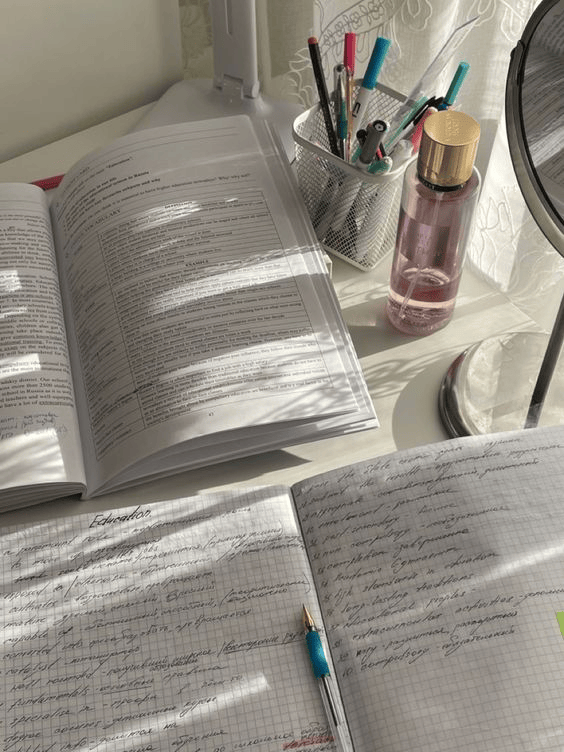
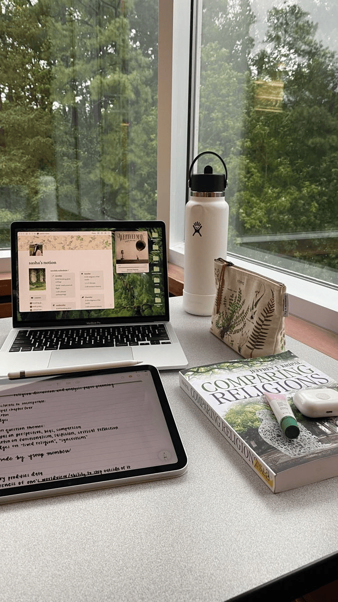

Мои увлечения
Привет!👋 Меня зовут Настя и здесь я хочу рассказать о своих увлечениях. Я очень любознательный и творческий человек, многое в этом мире меня интересует и ниже я хочу рассказать о том, чем люблю заниматься ☺️

Привет!👋 Меня зовут Настя и здесь я хочу рассказать о своих увлечениях. Я очень любознательный и творческий человек, многое в этом мире меня интересует и ниже я хочу рассказать о том, чем люблю заниматься ☺️
Вождение приносит мне огромное удовольствие, я обожаю ездить в другие города на дальние расстояния с подругами. В этом есть какая-то особенная атмосфера легкости и свободы 🍃🛣


Путешествия дарят огромный прилив энергии и возможность познавать новое, знакомится с другой культурой и людьми
Изучение иностранных языков дает мне свободу общения в путешествиях и повседневной жизни. Я люблю читать и смотреть фильмы на английском или польском языках. На данный момент дополнительно изучаю немецкий язык 💻📚
 